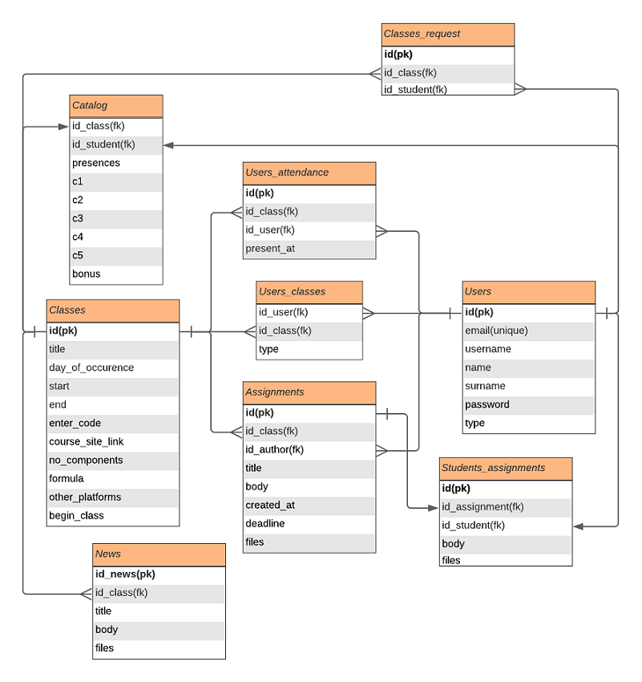

This document addresses a technical frame of reference concerning the development progress of the Class Manager project web site. Main topics referenced in this report include modeling of the application emphasizing the server side, database and clients request handling.
The main goal was for the project web site to act as the main communication tool between teachers and their students. For this reason, the site has been designed with the following in mind:
Creating a utility for the management of students. The web solution provides:
The architecture is inspired by the MVC (Model-View-Controller) model. MVC is an architectural model used in software engineering. The success of the model is due isolating the business logic from the resulting user interface, considering an application where the visual appearance and/or the lower levels of the rules of businesses are easier to modify without affecting other levels.
Furthermore from the application design point of view, the REST (Representational state transfer) API was integrated. The motivation behind it is that API works as a mediator between the users or clients and the resources or web services they want to get. It’s also a way for an organization to share resources and information while maintaining security, control, and authentication, determining who gets access to what.
The server side of the application provides a simple static file server built with pure Node.js, which is also responsible with handling dynamic requests from clients. The policy of the server consists of verifying the received URL from the client’s request.
In order to process a client’s dynamic request, the URL must meet the required standard, by starting with ”/api”. Before sending the request further to the controller, the server certifies if there is an available valid cookie associated with the client.
The other part of the server deals with loading folder content as file server.The logic is to look for the extension of the file being requested and see if it matches with one of the specified MIME types. Lastly, we respond to the client with the file information by reading the file from the system. If the URL does not specify a file, the client is redirected to the web site’s landing page.
Any request made by the client which is not static is sent to the router of the application. Once the request is received from the server side it is further delegated to the router for managing. Once it gets to the routing phase, the HTTP request method is checked and the router parses the URL to facilitate the ease of handling the parameters. Each dynamic route is associated with a controller method responsible of handling the request appropriately.
For the database management of the web site application, a relational database was used, backed by
PostgreSQL.
The database
consist of 9 tables :

The client-server communication occurs via RESTful API services. When a client request is made, it transfers a representation of the state of the resource to the endpoint. This information, or representation, is delivered in the JSON(Javascript Object Notation) format via HTTP.
Each client is uniquely identified with a cookie which is generated at the authentication phase and sent back to the client as response. The cookie is used as an identifier, used by the server to properly manage its clients. The cookie encompasses a json web token which holds the client’s identity by using their database id along with the type of the account they own in order to manage their requests accordingly. The cookie is being sent back and forth during the interaction by the client’s requests header (which makes it http secure) and is available for a day or until logout action is performed, when the cookie is destroyed.
The client-server requests can be consulted at the following documentation link .